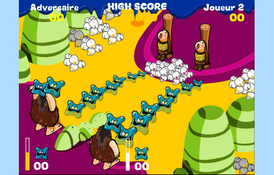
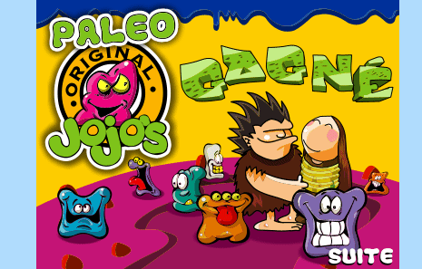

PaleoJojo's was a game where you played as a caveman trying to save his girlfriend who was tied up on the other side of a river.
You were supposed to throw Mookies (Jojo's #4) in the water to create a bridge.
The player was in competition against the computer, the first caveman to complete the bridge won.
Gifs of the game, recorded from the swf file.


When the title screen is shown, right click the frame and select "play" to continue. Do it again after the "Jouer" button is displayed. Then, use the spacebar to throw Mookies in the water.